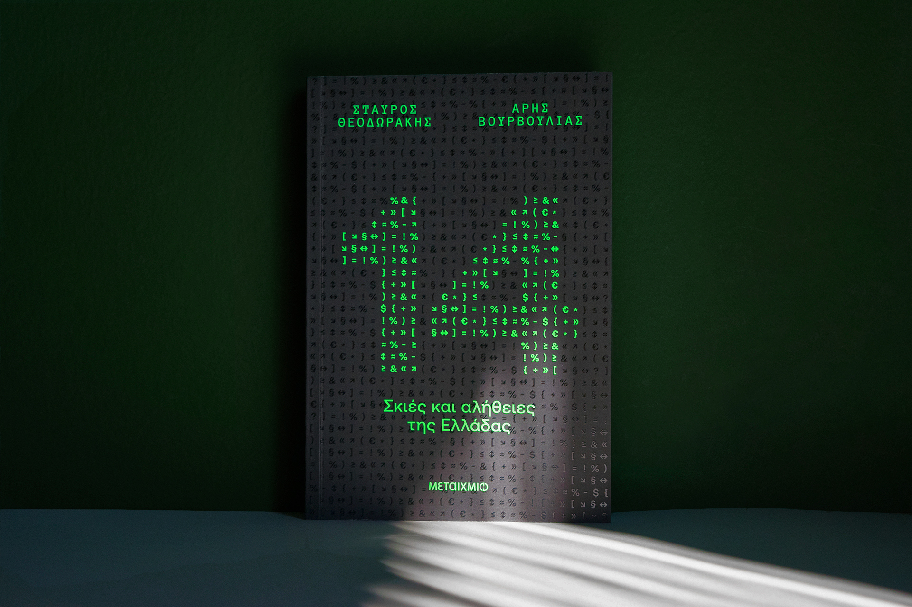
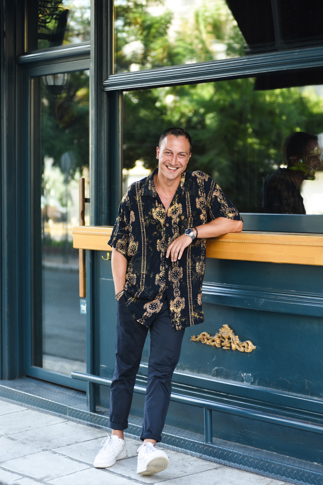

Άρης Βουρβούλιας
Author & Political Analyst · Athens, Greece
Είμαι συγγραφέας και πολιτικός αναλυτής με υπόβαθρο στη δημοσιογραφία, τα μέσα ενημέρωσης και την πολιτική επιστήμη. Πρόσφατα συνυπέγραψα με τον Σταύρο Θεοδωράκη το ερευνητικό bestseller «14 Σκιές και Αλήθειες της Ελλάδας». Κατά καιρούς έχω αρθρογραφήσει σε κορυφαία ελληνικά ΜΜΕ, ενώ έχω δημιουργήσει και τη δική μου σειρά podcast.
Για δέκα χρόνια έζησα στην Κοπεγχάγη, έχοντας προηγουμένως ζήσει και εργαστεί στην Ισπανία και την Ελλάδα. Στη διάρκεια της επαγγελματικής μου πορείας συνέβαλα καθοριστικά στην ανάπτυξη του AWM Network, σημερινού Lead.io, μιας εταιρείας που εξαγοράστηκε επιτυχώς το 2021. Στη συνέχεια υπηρέτησα ως COO της Lånio ApS. Σήμερα έχω επιστρέψει στην Αθήνα, συνεχίζοντας να κινούμαι στο πεδίο όπου τέμνονται η πολιτική ανάλυση, η επιχειρηματικότητα, τα μέσα και η δημόσια συζήτηση.